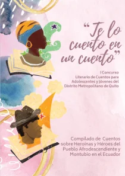
Te lo cuento en un cuento
Compilado de cuentos sobre heroínas y héroes del pueblo afroecuatoriano y montubio en el Ecuador.
Leer más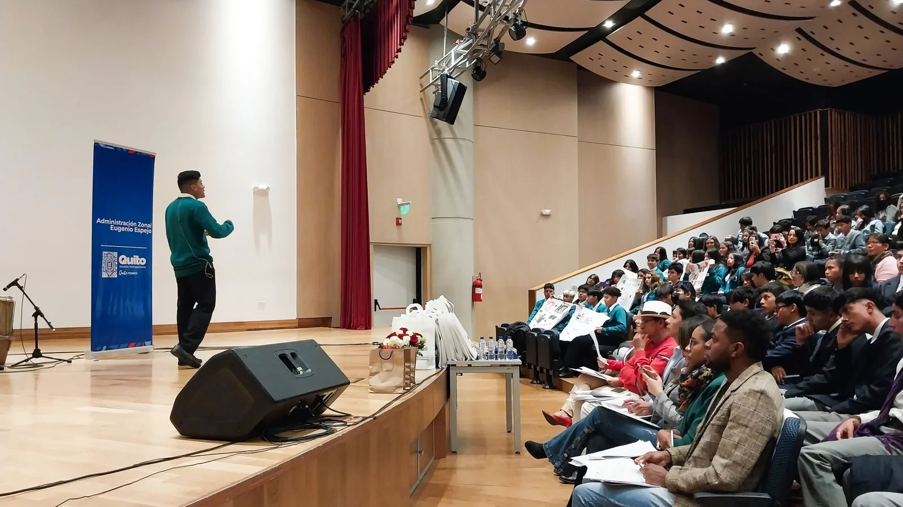
El GPA organiza Encuentros de Oratoria. Objetivos: Promover y revitalizar las contribuciones de los pueblos afroecuatorianos y visibilizar su participación en la historia. El objetivo es dar a conocer la historia en contexto y garantizar un desarrollo humano integral y sostenible, preservando la cultura e identidad.
El Concurso Literario "Te lo cuento en un cuento" fomenta la lectura y escritura en jóvenes, destacando personajes afroecuatorianos y montubios distintos de la historia del Ecuador. Ofrece capacitación en narrativa y sensibilización cultural e identitaria, y derechos. Se puede realizar de forma autónoma o con gestores de forma objetiva y amena.
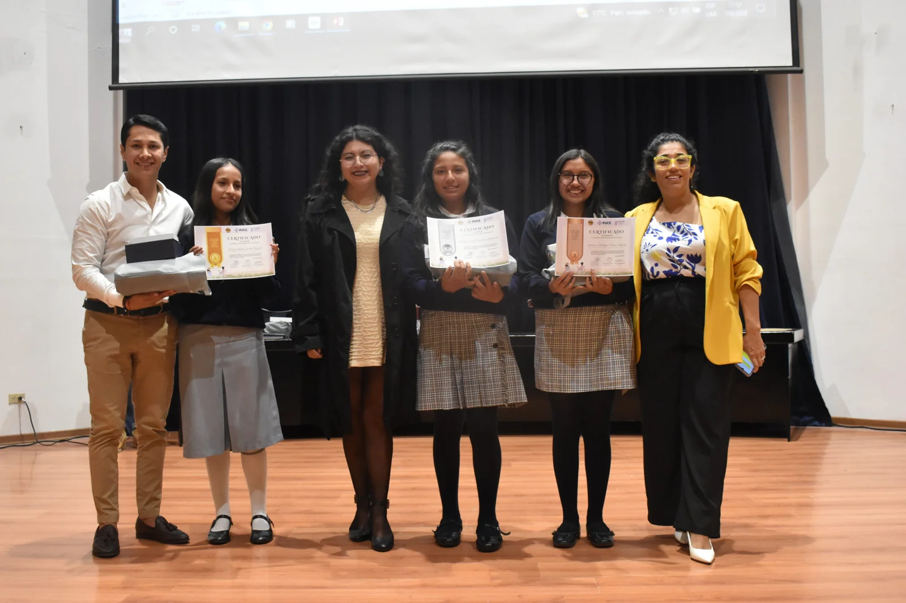

Compilado de cuentos sobre heroínas y héroes del pueblo afroecuatoriano y montubio en el Ecuador.
Leer más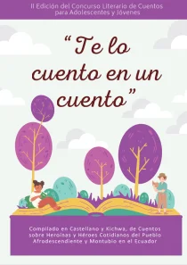
Compilado de cuentos sobre heroínas y héroes del pueblo afroecuatoriano y montubio en el Ecuador.
Leer más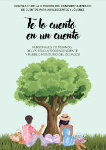
Compilado de cuentos sobre heroínas y héroes del pueblo afroecuatoriano y montubio en el Ecuador.
Leer másEl proyecto "CONEXIÓN: Transformando las Narrativas" contará con tres insumos. La renovación y modernización de la imagen y brochure institucional del GPA tiene como objetivo revitalizar y modernizar la imagen institucional del Grupo de Pensamiento Afrodescendiente (GPA). Además, cuenta con otros dos productos, la revista "Conexión de Voces" y el Compilado de Obras del I Concurso de Diseño Gráfico "Creatividad Pura", estos están enfocados en fomentar la expresión creativa y la participación de la comunidad en la narrativa visual y escrita.
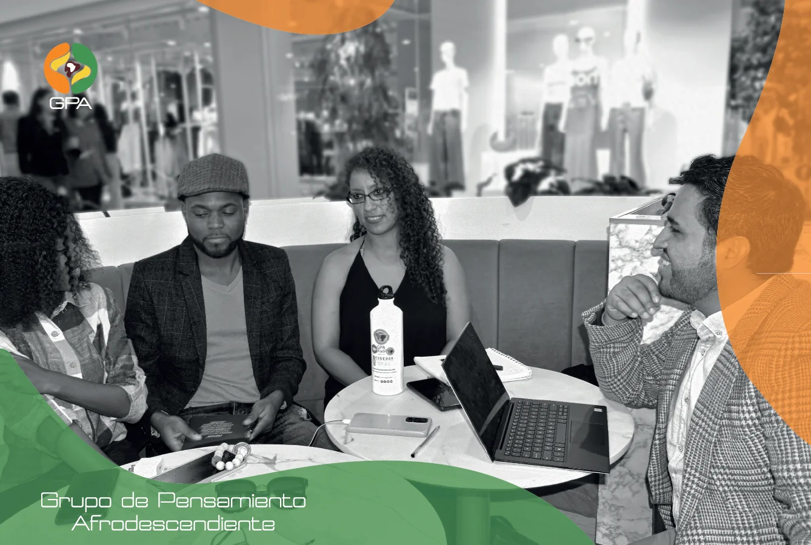
Este componente del proyecto se enfoca en revitalizar la identidad visual del GPA, reflejando sus valores, objetivos y compromisos de manera más contemporánea y atractiva.
A través de artículos, ensayos, entrevistas y obras creativas, se promoverá el intercambio de ideas, experiencias y conocimientos, creando un espacio inclusivo para la expresión y el diálogo.
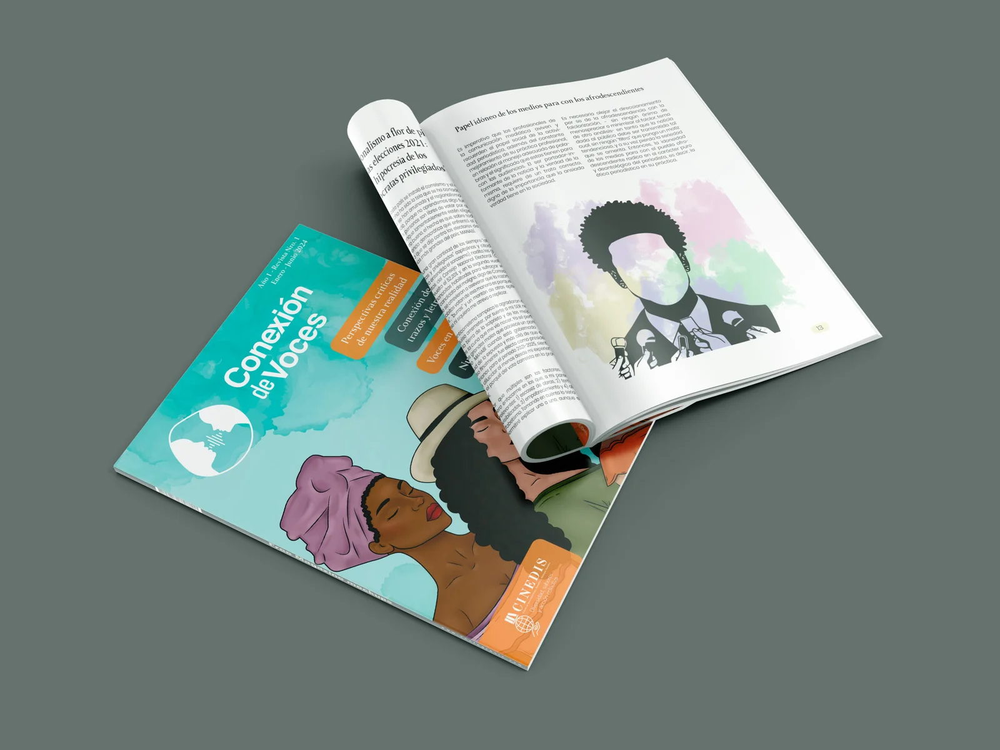
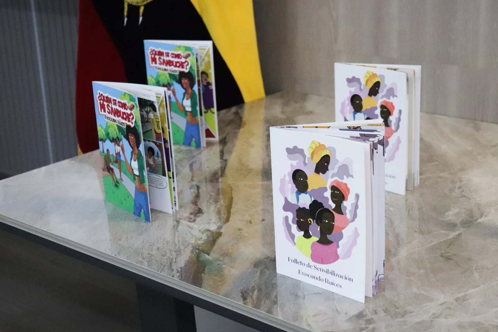
El proyecto "CONEXIÓN: Transformando las Narrativas" del GPA busca revitalizar su imagen institucional. Estos productos fomentan la expresión creativa y la participación de la comunidad en la narrativa visual y escrita.
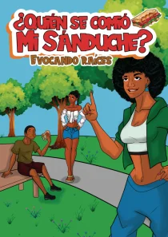
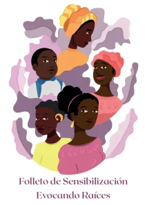
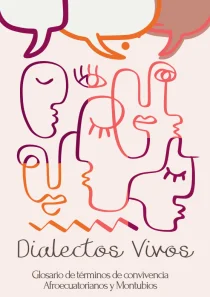
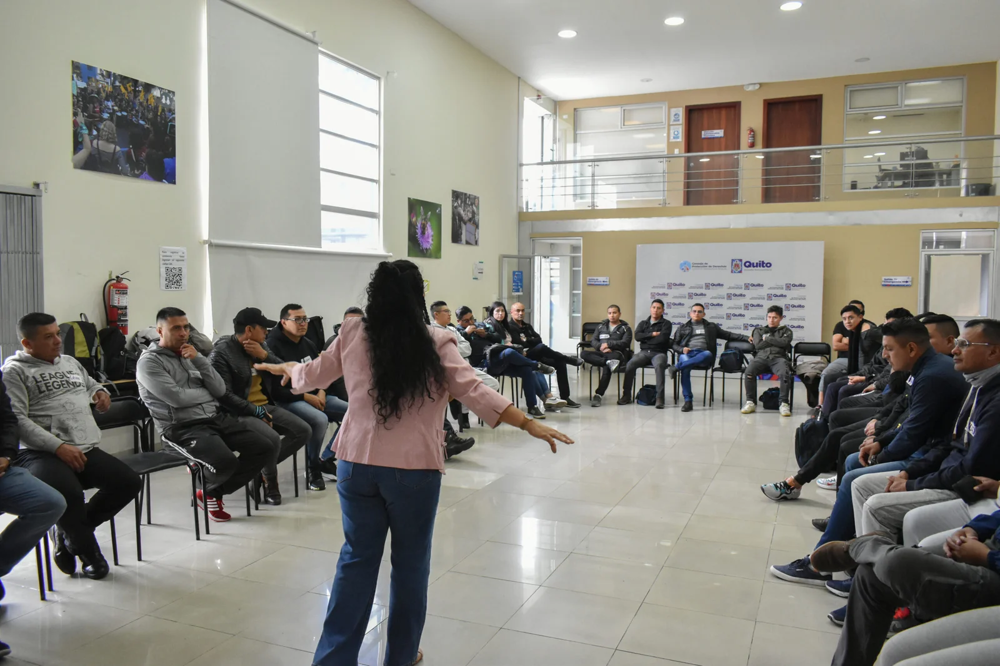
El GPA desarrolla un proyecto de liderazgo para jóvenes en cuatro Administraciones Zonales de Quito. Busca promover derechos colectivos, fortalecer el tejido social e impulsar su participación en políticas públicas. Además, fomenta el uso de herramientas tecnológicas y medios alternativos de comunicación.
El GPA impulsa iniciativas para la seguridad digital, protegiendo los datos y la privacidad de las comunidades y líderes sociales frente a amenazas en el entorno virtual.
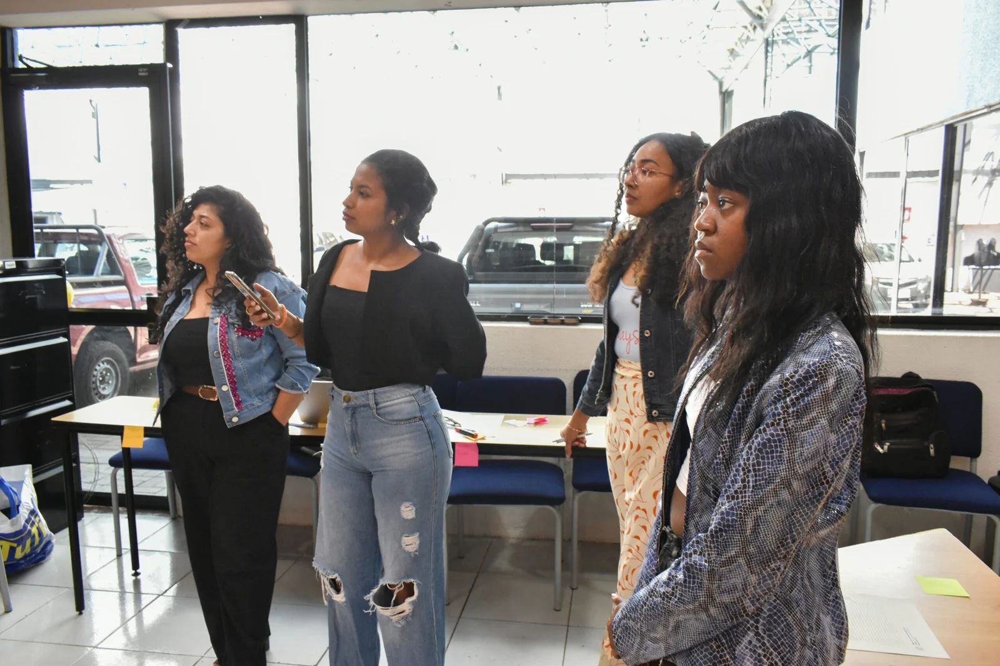
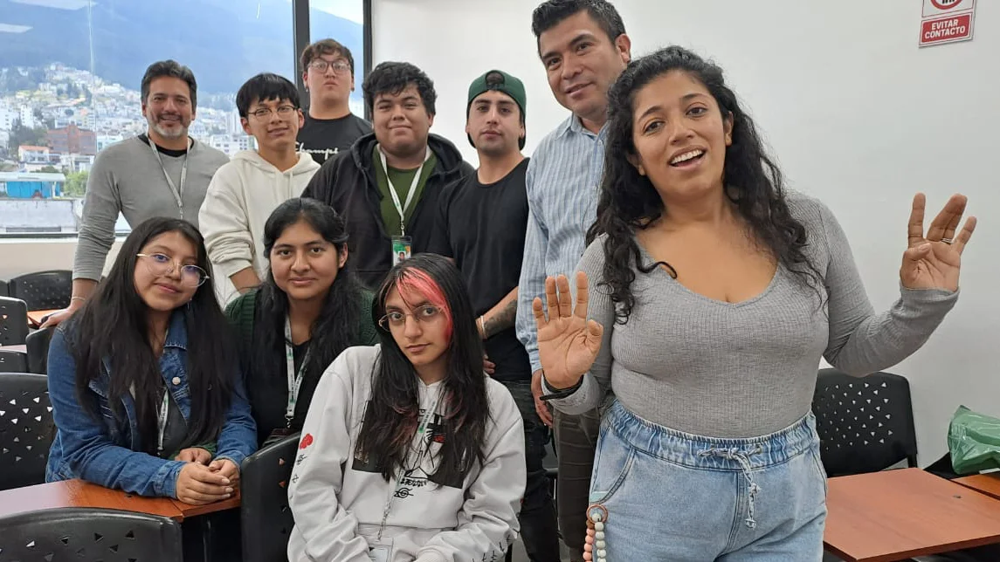
El GPA impulsa proyectos de sensibilización sobre la historia, cultura y derechos de la población afroecuatoriana. Busca fomentar el respeto a la diversidad y destacar las contribuciones de los pueblos afrodescendiente y montubio en Ecuador.
El GPA ofrece talleres sobre derechos humanos para jóvenes y líderes comunitarios, fortaleciendo su liderazgo social y político. Promueve el conocimiento y ejercicio de sus derechos individuales y colectivos.
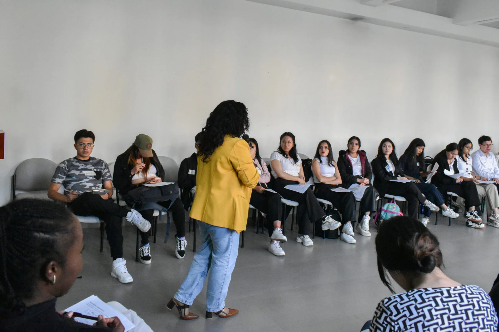
Este convenio facilita la cooperación institucional para proyectos de vinculación, prácticas, investigación, asesoría, transferencia de tecnología y emprendimiento. Esta colaboración se alinea con la oferta académica del ITBCO.
Tiene como objetivo fortalecer la cooperación interinstitucional para promover el intercambio académico, cultural e investigativo. Además, fomenta la formación y prácticas preprofesionales.
Tiene como objetivo fomentar el encuentro y la vinculación de los estudiantes en el área de la Lengua y la Literatura, así como reconocer la contribución de los pueblos afroecuatorianos y montubios del país.
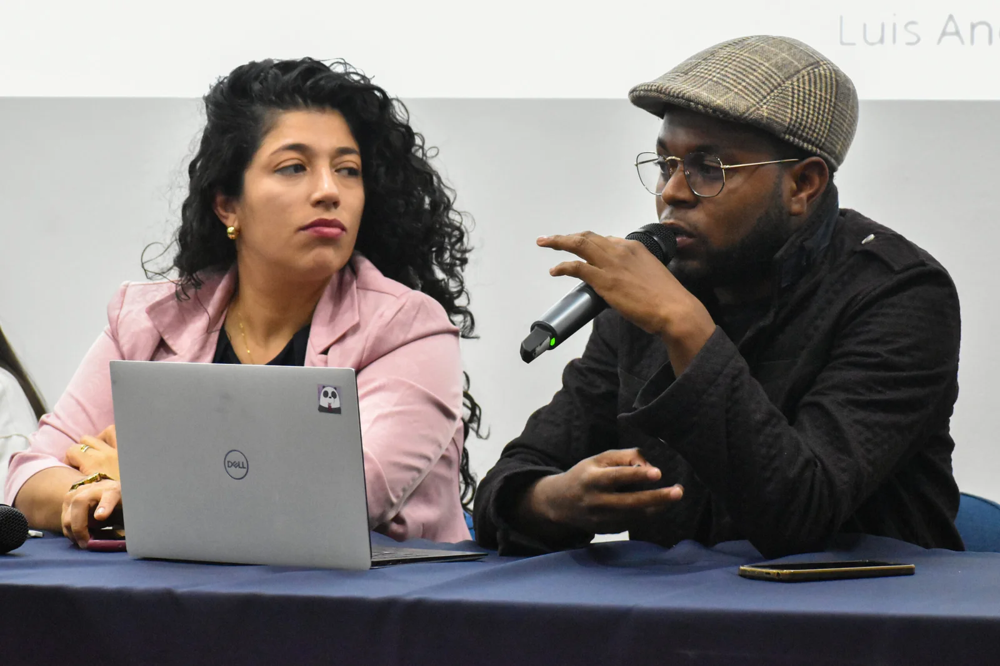
El Centro de Investigaciones, Estudios y Diálogos Sociales (CINEDIS) creado en 2018, es una organización de la sociedad civil ecuatoriana. Su objetivo es producir, fomentar y fortalecer la investigación-acción e investigación crítica. Busca visibilizar el contexto social, cultural y político de los grupos de atención prioritaria e históricamente excluidos en Ecuador y la región.
GPA Radio es un medio de comunicación alternativo y comunitario del GPA. Permite conectar con organizaciones sociales a escala local, nacional y regional. Facilita intercambios culturales y de experiencias organizativas a escala regional.
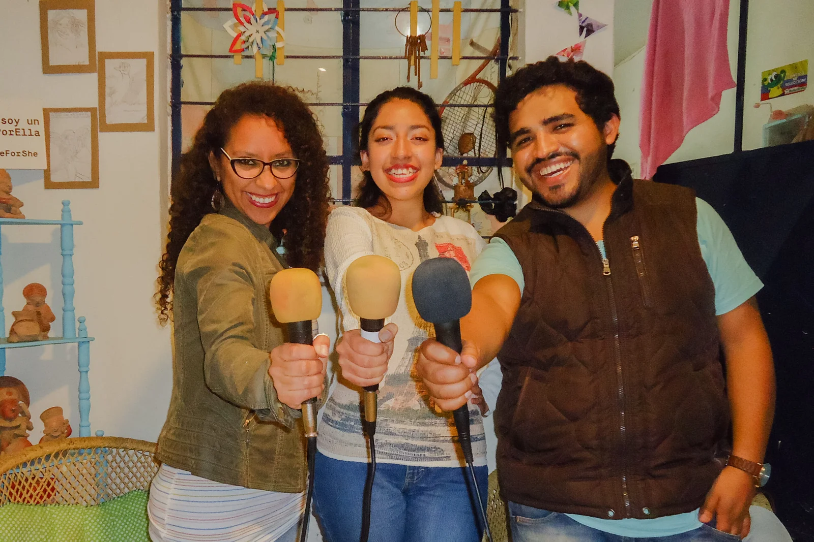
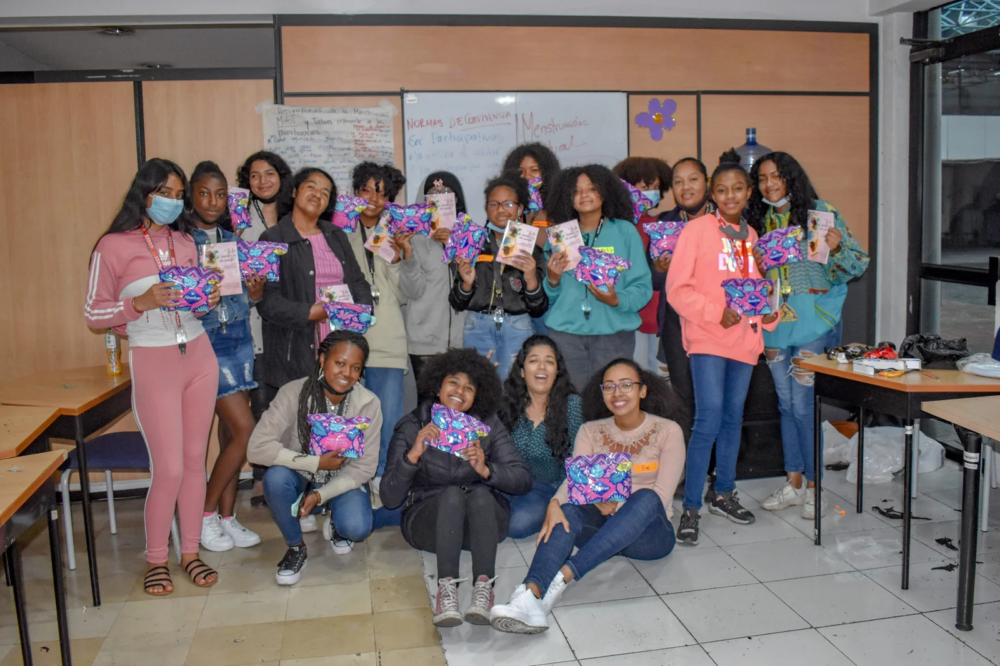
La organización se compromete a promover los derechos sexuales, menstruales y reproductivos de todas las mujeres. Buscan crear espacios de participación para decisiones informadas sobre salud sexual y reproductiva.